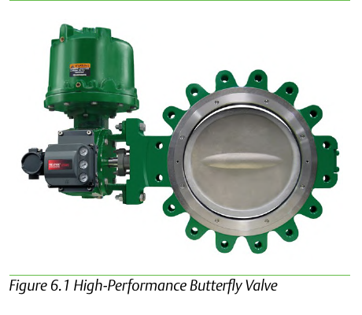

High-Capacity Service: Why the Size Cutoff

- 1Butterfly >NPS 48, globe >NPS 12, ball >NPS 24
- 2Static pressure loads at shutoff increase geometrically as size increases arithmetically
- 3The category is a direct consequence of that scaling, not an arbitrary cutoff
Control Valve Handbook, 6th ed., Fig. 6.1. Component Index: cvh-cmp-butterfly-valve-fieldvue-assembly.